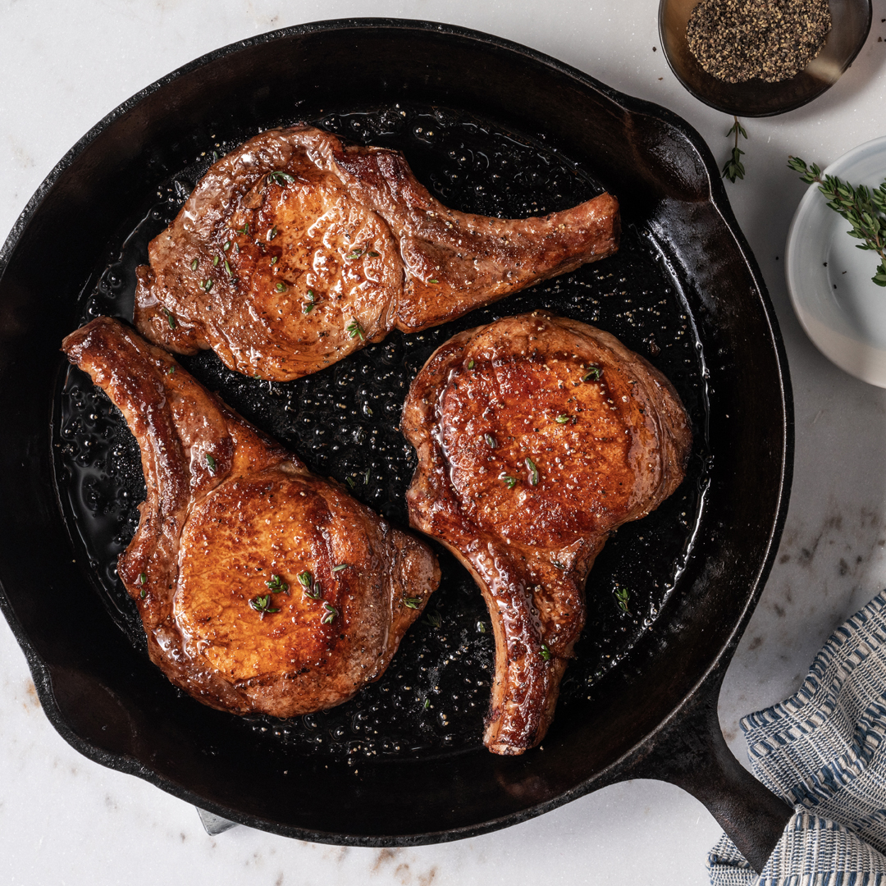

Skillet Pepper and Garlic Pork Chops

Description
This recepie is really good for any ocasion when you want to have an amazing evening with your friends around the table enjoying the most delicious
pork chops near some salad or potatoes or anything that you woud like. And of course if you like garlic and black pepper you will enjoy this recepie.
Ingredients
- 4 (1 1/2 inches thick) boneless center-cut pork chops
- 4 tablespoons Worcestershire sauce
- 4 tablespoons olive oil, divided
- 2 cloves garlic, crushed
- 2 tablespoons coarsely ground black pepper
Steps in making
- Combine pork chops, Worcestershire, 3 tablespoons olive oil, garlic, and black pepper in a large, resealable plastic bag
- Marinate chops in the mixture for about 30 minutes.
- Heat remaining oil in a heavy skillet over medium-high heat.
- Remove pork from the marinade and place into the skillet to brown on all sides, 5 to 7 minutes.
- Reduce heat and let simmer, basting with marinade during cooking, until no longer pink in the centers, 15 to 20 minutes.
- An instant-read thermometer inserted into the center should read 145 degrees F (63 degrees C).